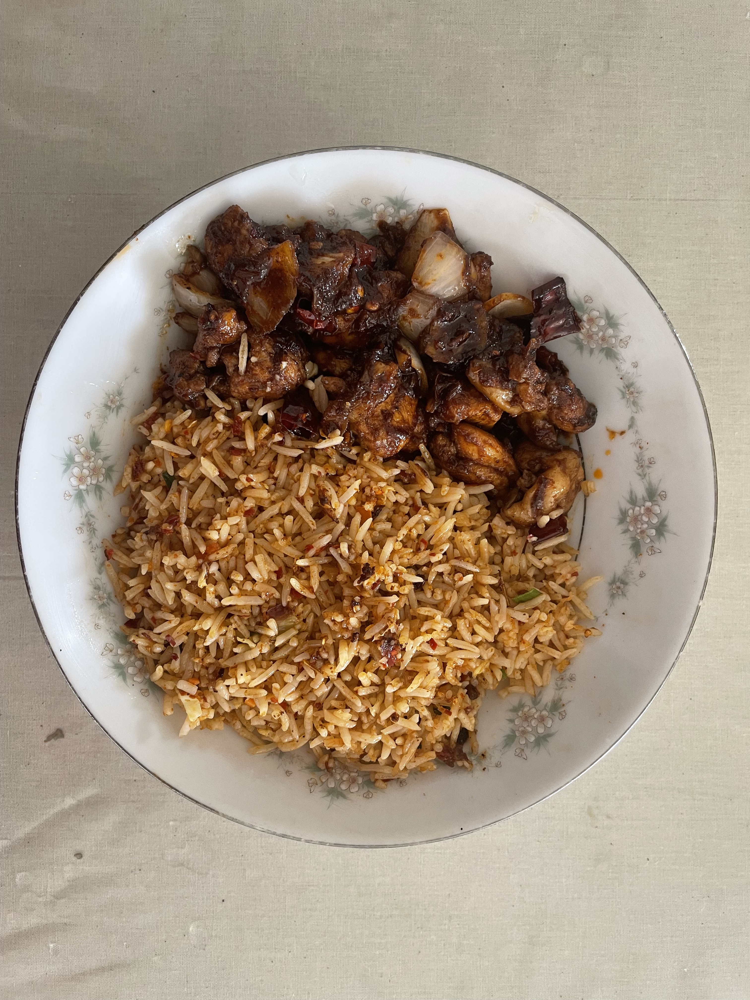
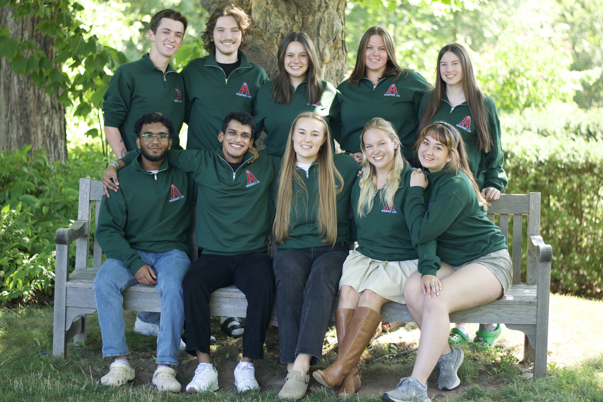
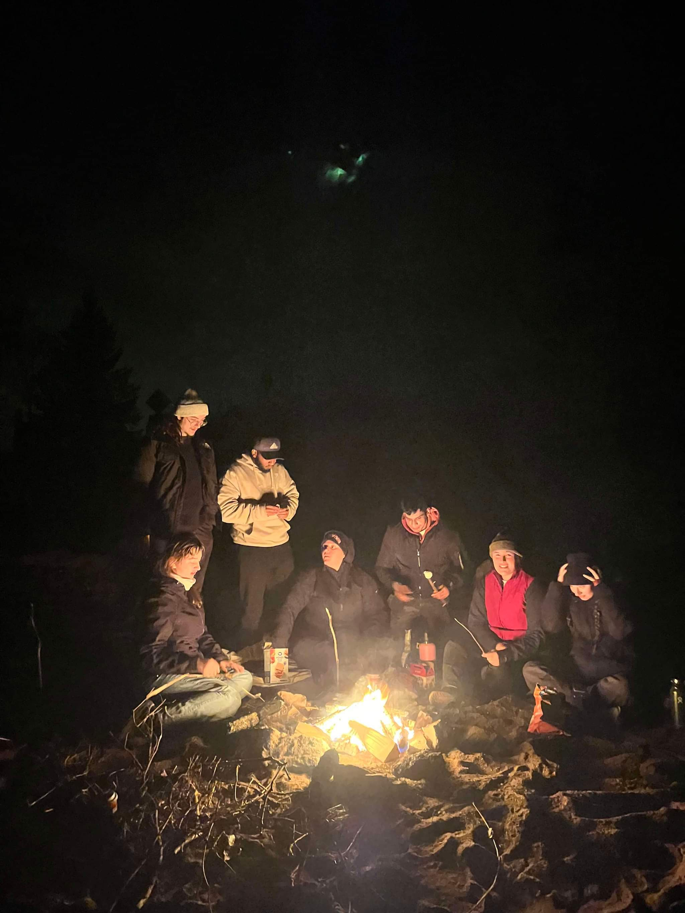

Who am I
My name is Chenuka Gamage. I am a fourth year student in Computer Science here at Acadia. I am from Sri Lanka which is a small island in the Indian Ocean. My family consists of my parents, my elder sister, my dog, and I. My parents are situated in Sri Lanka where they are currently working. My sister is currently a PhD student in th University at Albany in the USA. My dog's name is Oreo, she is a German Shepherd who is currently 4 years old. Nevertheless of her being 4 years old, she acts like a baby. Here is a picture of her.

Canada and the Cold
I have been living in Canada for the past 2 years. It was a surreal change moving from a tropical country to a country where it snows. I am still unfamiliar with all the cold weather events which happen here. One thing that was so strange was waking up each day and checking the weather to see if it was going to snow. I have learned how to layer clothes to adapt to ever changing temperatures. I've learned to appreciate the beauty of snow and the cold weather. I have also learned to appreciate the beauty of the seasons. I've made a table about the clothing I wear in each season.
| Season | Clothing |
|---|---|
| Winter | Heavy Jacket, Gloves, Hat, Scarf, Boots |
| Spring | Light Jacket, Jeans, T-shirt, Sneakers |
| Summer | Shorts, T-shirt, Shoes |
| Fall | Light Jacket, Jeans, T-shirt, Sneakers |
My Hobbies
I have a range of hobbies that I do during my free time. I love meeting my friends and hanging out with them. We usually meet up at a certain place and talk about our day and what we have been up to. I also love cooking. Cooking has been a part of my life ever since I was 12 years old. I love trying out new recipes and experimenting with different ingredients. My inspiration for cooking has always been my grandmother. She is an excellent cook who makes some of th ebst dishes I have ever tasted. I have learned a lot from her and I am grateful for that. I have added two pictures of dishes I have made. The first one is a chocolate biscuit pudding and the second one is a chilli chicken with rice. I also enjoy photography. I love taking pictures of nature and people. I borrow my sister's camera which I carry around with me when I go on walks. I have taken many pictures which I have printed and pasted on the walls in my room.
| Dish | Picture |
|---|---|
| Chocolate Biscuit Pudding |  |
| Chilli Chicken |  |
Work Experience
I am currently working at 3 organizations:
- Acadia University Residence Life
- Wheelock Dining Hall
- Acadia University Jodrey School of Computer Science.
I have been working at the Wheelock Dining Hall for the past 2 years. I started working there in my second semester. I work as an associate where I work various shifts ranging from serving food to running around and keeping the drinks full to managing the entire panty area. I have learned a lot from working there. I have learned how to manage my time, how to work in a team, and how to communicate with others. I started to work at the Residence Life this year. I work as a Residence Assistant where I am responsible for tweo divs of students. I get to work with a lovely team of Residence Assistants who are always there to help me out. Here is a picture of the team I work with.
 